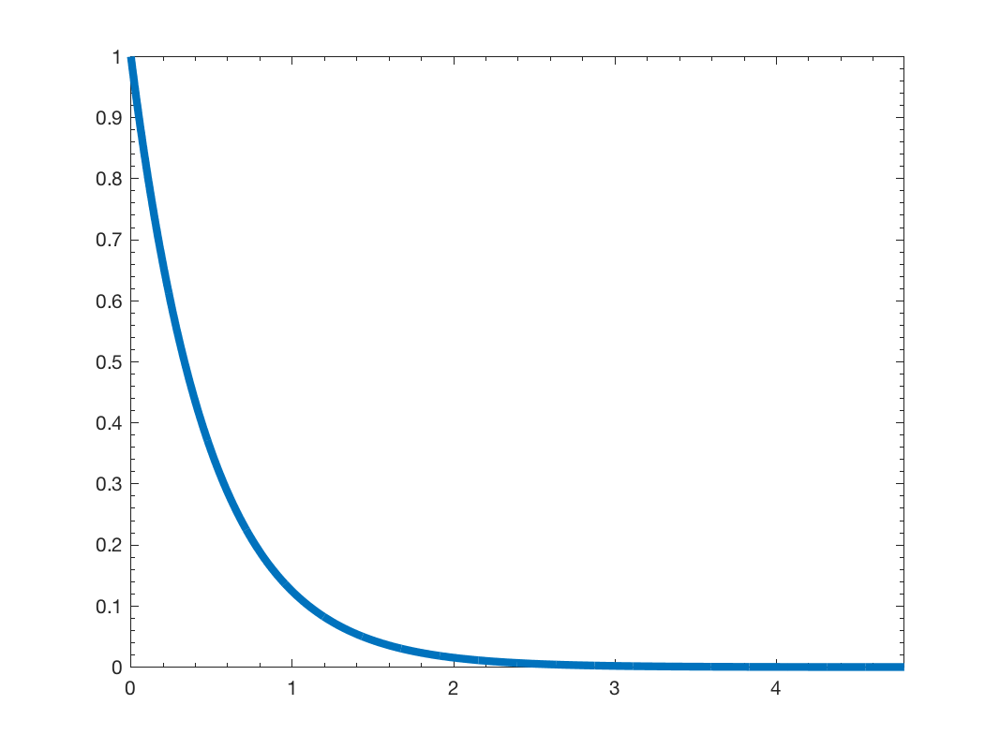

gsp_design_heat(G); gsp_design_heat(G,tau); gsp_design_heat(G,tau,param);
| G | Graph structure |
| tau | scaling parameter (default 10) |
| g | filter |
This function design the following filter:
If tau is a vector, the function returns a cell array of filters.
param is an optional structure containing the following fields
This function will compute the maximum eigenvalue of the laplacian. To be more efficient, you can precompute it using:
G = gsp_estimate_lmax(G);
Example:
Nf = 4; G = gsp_sensor(100); G = gsp_estimate_lmax(G); g = gsp_design_heat(G); gsp_plot_filter(G,g);